Analiza rješenja · JOI Spring Camp 2024 · Dan 2
Trobojna svjetla
O ovom članku
Tekst je prijevod službene japanske prezentacije rješenja, preoblikovan u članak. Slajdovi su ugrađeni kao slike; natpis pod svakim slajdom je prijevod teksta na njemu. Dijelovi označeni kao trenerska napomena nisu u izvornoj prezentaciji — dodani su da popune korake koje slajdovi preskaču ili samo skiciraju.
-
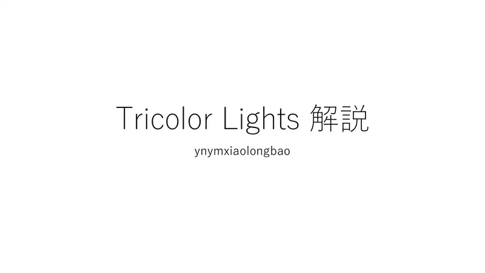
1Naslov; analiza: ynymxiaolongbao. -
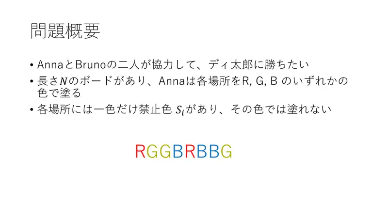
2Anna i Bruno surađuju protiv djelitelja: niz duljine $N$, boje R/G/B, u svakom polju jedna zabranjena boja. -
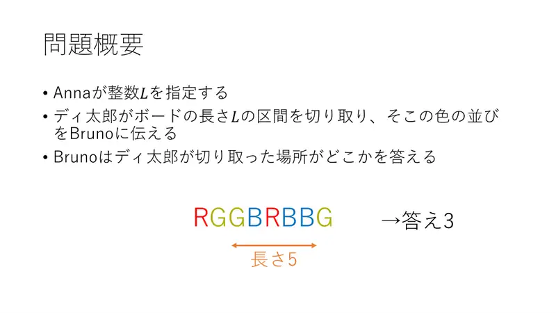
3Anna odabere $L$; djelitelj izreže interval duljine $L$ i pokaže ga Bruni; Bruno kaže gdje je. -
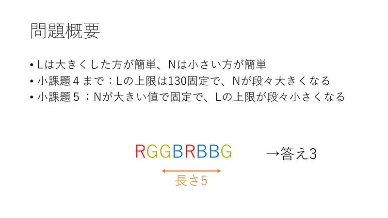
4Veći $L$ lakše, manji $N$ lakše. Podzadaci 1–4: $L\le130$ fiksno, $N$ raste. Podzadatak 5: $N$ velik, $L$ se smanjuje.
Podzadaci 1–4 30 bodova
-
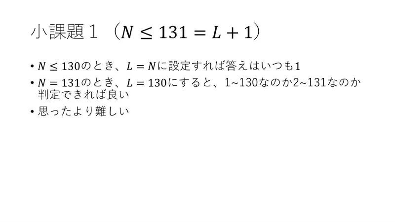
5$N\le130$: $L=N$, odgovor 1. $N=131$: $L=130$, treba razlikovati 1..130 od 2..131 — teže nego što izgleda. -
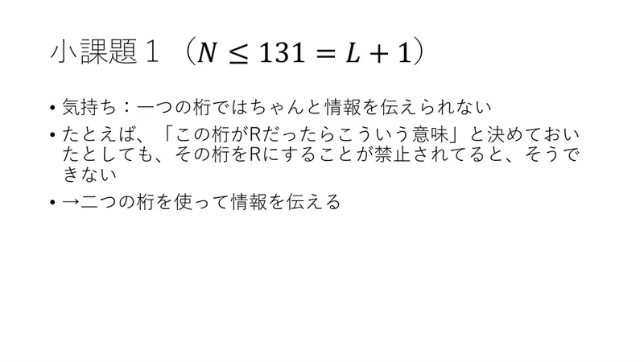
6Jedno polje ne može prenijeti informaciju („ako je R znači…” — R može biti zabranjen). Koristi dva polja. -
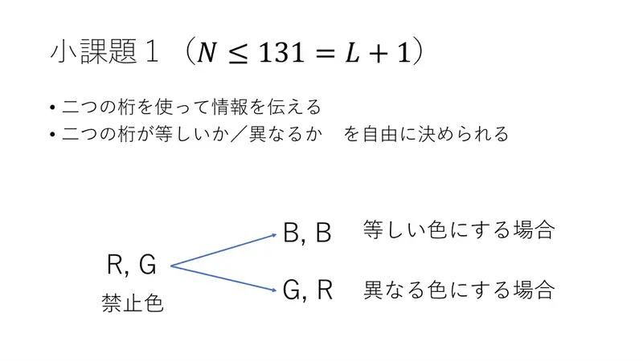
7Dva polja: možemo slobodno odlučiti jesu li jednaka ili različita. -
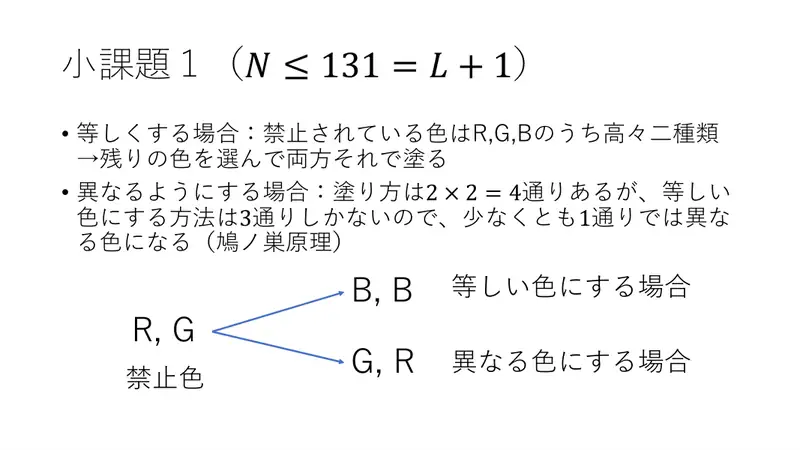
8Jednaka: zabranjene su najviše dvije boje, preostala ide u oba. Različita: $2\times2=4$ bojanja, a jednakih je najviše 3 → bar jedno je različito (Dirichlet). -
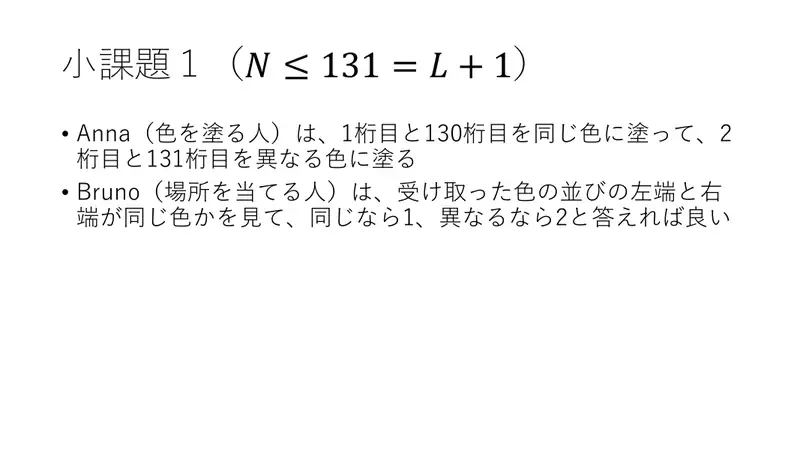
9Anna: polja 1 i 130 jednaka, 2 i 131 različita. Bruno: usporedi krajeve prozora; jednaki → 1, različiti → 2. -
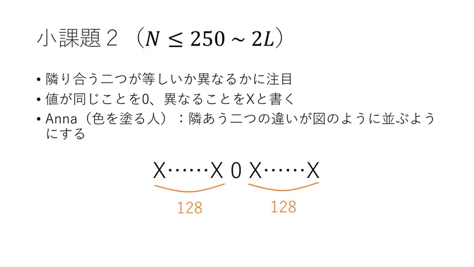
10$N\le250\approx2L$: gledaj susjedne parove: 0 = jednaki, X = različiti. Anna: X…X 0 X…X(128, 0, 128). -
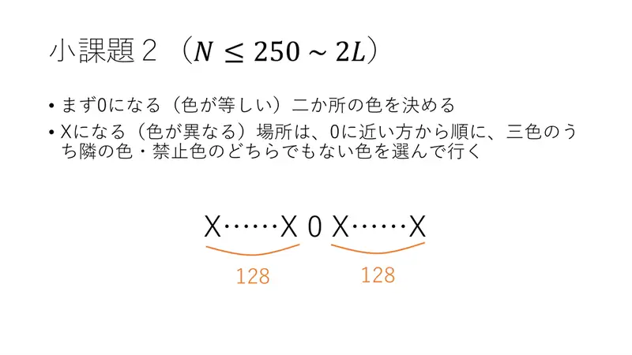
11Prvo oboji dva jednaka polja, pa X-ove od nule prema van: boja različita od susjeda i od zabranjene uvijek postoji. -
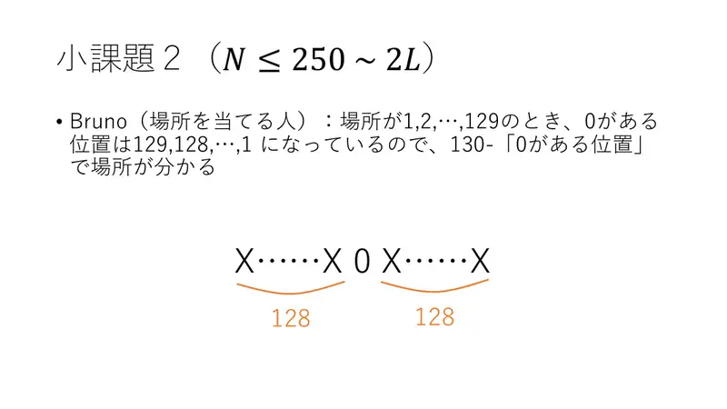
12Bruno: za položaj $1..129$ nula je na $129..1$ → položaj $=130-$ (indeks nule). -
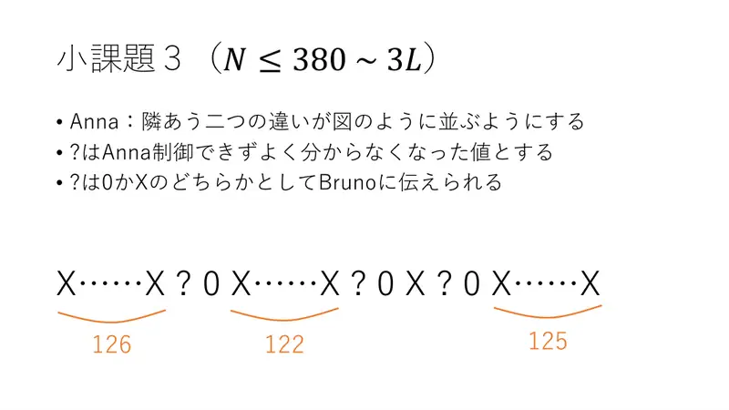
13$N\le380\approx3L$: X…X ? 0 X…X ? 0 X ? 0 X…X(126, 122, 125); „?” je nekontrolirana razlika, Bruni se javlja kao 0 ili X. -
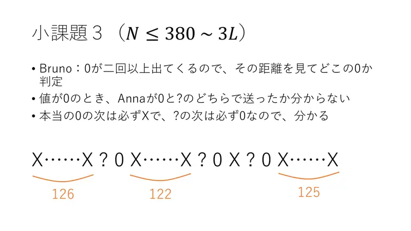
14Bruno: nula se pojavljuje bar dvaput, razmak kaže koja je. „?” koji ispadne 0: prava 0 iza sebe ima X, a „?” iza sebe ima 0 — razlikuju se. -
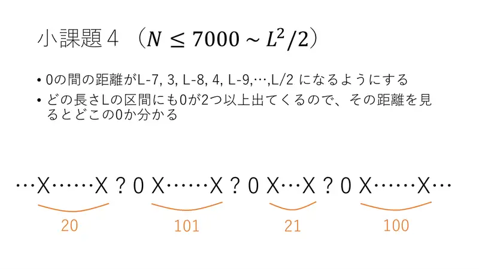
15$N\le7000\approx L^2/2$: razmaci između nula $L-7, 3, L-8, 4, L-9, \dots, L/2$: svaki prozor sadrži bar dvije nule, razmak identificira.
Podzadatak 5: veliki blokovi
-
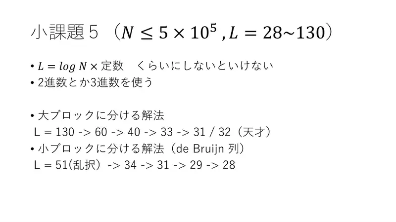
16Treba $L\approx c\log N$: binarno/ternarno. Veliki blokovi: $130\to60\to40\to33\to31/32$ („genijalno”). Mali blokovi (de Bruijn): $51$ (slučajno) $\to34\to31\to29\to28$. -
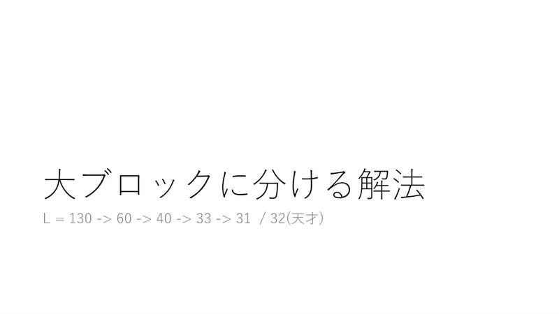
17Veliki blokovi. -
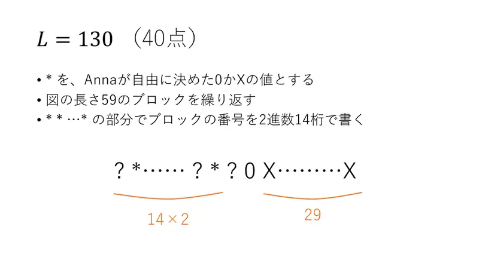
18$L=130$ (40): „*” = 0 ili X po Anninom izboru. Blok duljine 59: 14 puta „? *” (binarni broj bloka), „? 0”, 29 X. -
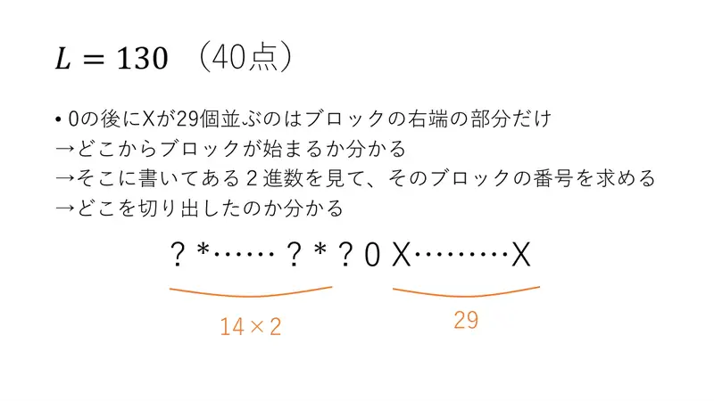
19„0 pa 29 X” samo na kraju bloka → granica bloka → pročitaj broj → položaj. -
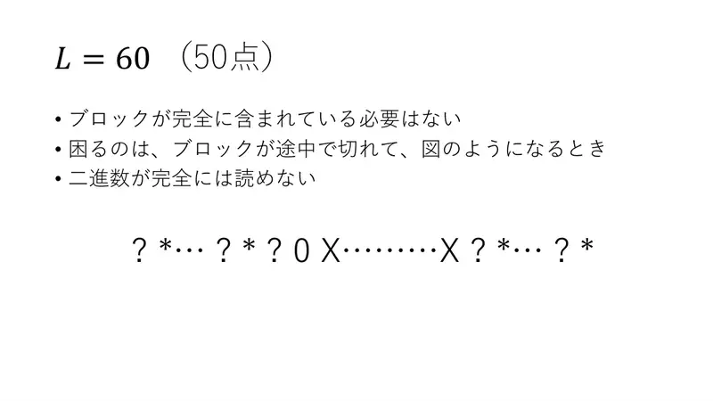
20$L=60$ (50): blok ne mora biti cijeli u prozoru; problem je prerezan blok — broj nije potpuno čitljiv. -
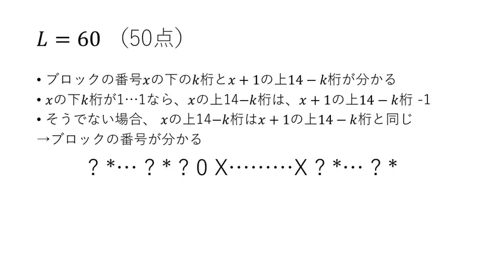
21Vidimo donjih $k$ bitova od $x$ i gornjih $14-k$ od $x+1$. Ako su donji bitovi $x$ svi 1, gornji dio $x$ = gornji dio $x+1$ minus 1; inače jednaki → $x$ poznat. -
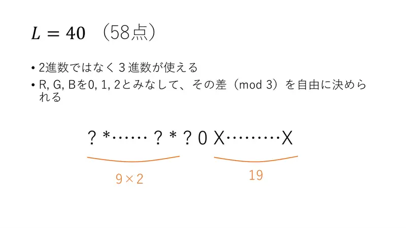
22$L=40$ (58): ternarno — R,G,B kao 0,1,2, razlika mod 3 slobodno birljiva. -
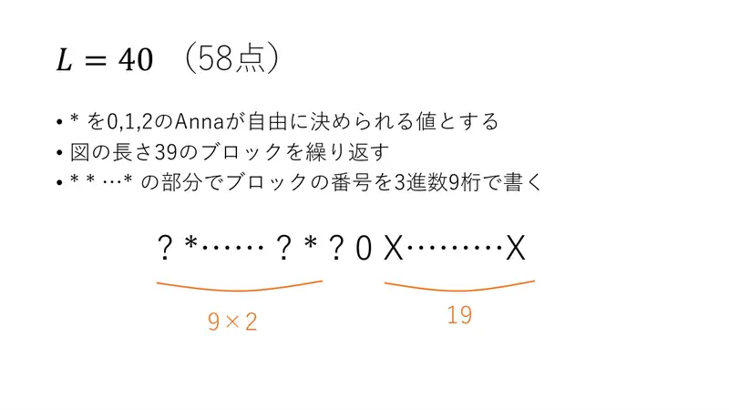
23„*” $\in\{0,1,2\}$; blok 39: 9 ternarnih znamenaka („? *” ×9), „? 0”, 19 X. -
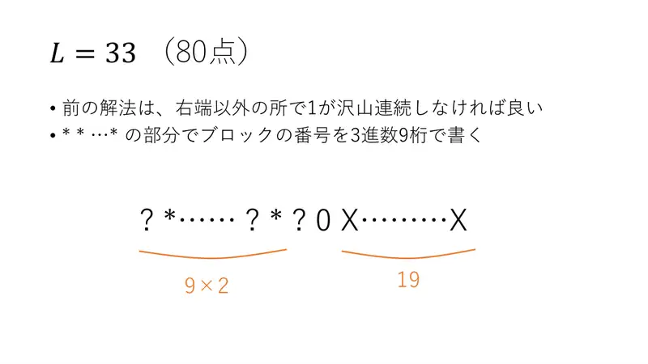
24$L=33$ (80): dovoljno je da se X-ovi ne gomilaju izvan desnog kraja. -
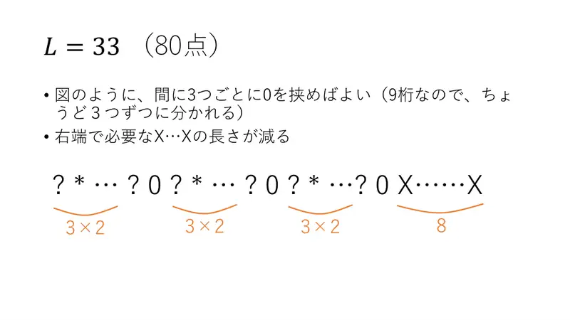
25Umetni „? 0” nakon svake 3 znamenke (3 grupe po 8); marker $X^8$ dovoljan. -
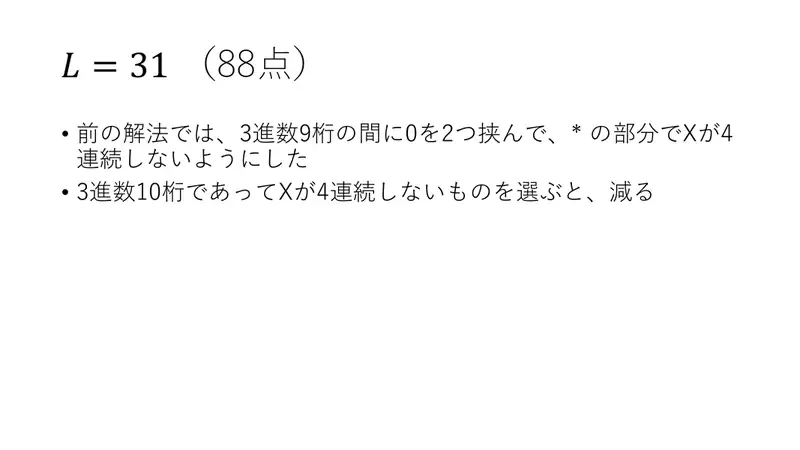
26$L=31$ (88): birajući 10-znamenkaste ternarne brojeve bez 4 uzastopna X marker se još skraćuje. -
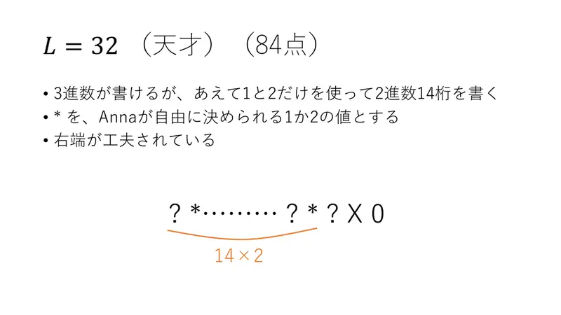
27$L=32$ („genijalno”, 84): namjerno samo znamenke 1 i 2 (binarno, 14 znamenaka), desni kraj „? X 0”. -
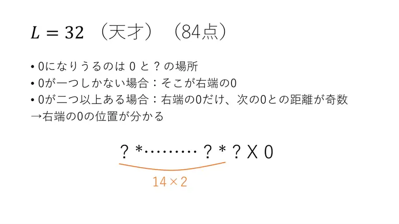
28Nule samo na „?” i na kraju. Jedna nula → to je kraj. Više nula → samo krajnja ima neparnu udaljenost do sljedeće nule.
Podzadatak 5: de Bruijn
-
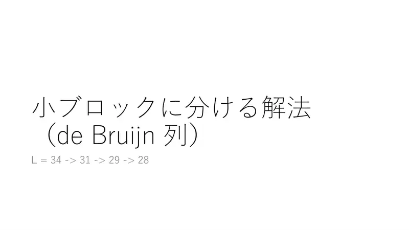
29Mali blokovi: de Bruijnov niz. $L = 34\to31\to29\to28$. -
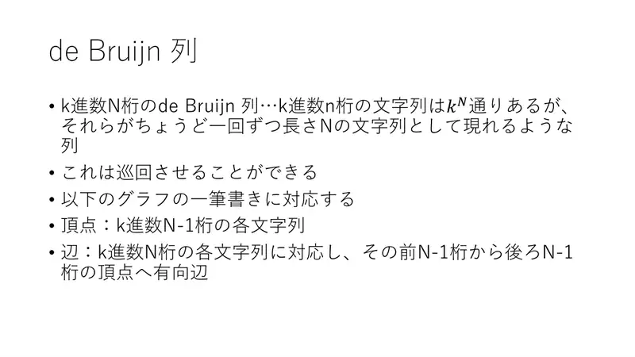
30De Bruijnov niz ($k$-arni, red $n$): cikličan niz u kojem se svaki od $k^n$ nizova duljine $n$ pojavljuje točno jednom; odgovara Eulerovom obilasku grafa: vrhovi $(n-1)$-nizovi, bridovi $n$-nizovi. -
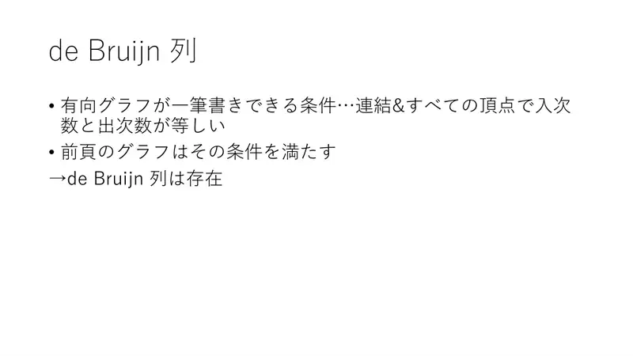
31Usmjeren graf ima Eulerov ciklus ako je povezan i svaki vrh ima ulazni = izlazni stupanj; taj graf to zadovoljava → niz postoji. -
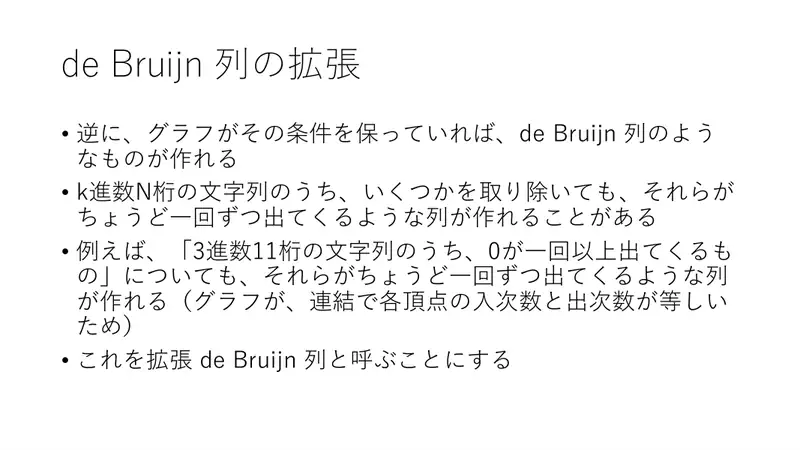
32Proširenje: ako izbacimo neke $n$-nizove, a graf ostaje povezan i uravnotežen, i dalje postoji niz u kojem se preostali pojavljuju točno jednom — npr. „ternarni 11-nizovi s bar jednom nulom”. Zovimo to prošireni de Bruijnov niz. -
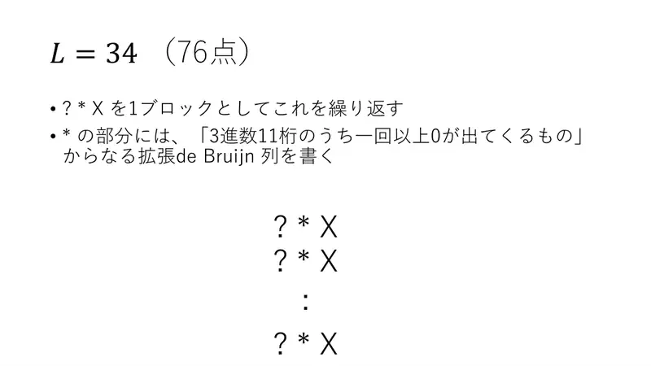
33$L=34$ (76): blok „? * X”; u „*” prošireni de Bruijnov niz 11-nizova s nulom. -
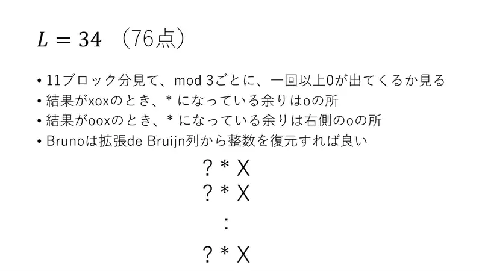
34Bruno gleda 11 blokova; za svaki ostatak mod 3 ima li nule. xox→ „*” je o;oox→ „*” je desno o. Iz niza obnovi indeks. -
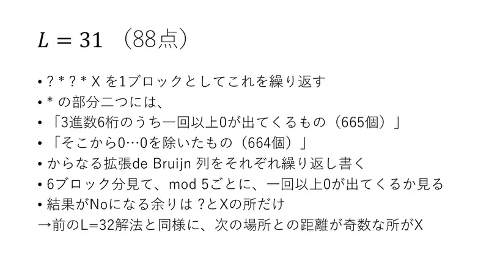
35$L=31$ (88): blok „? * ? * X”; dva toka: 6-nizovi s nulom (665) i isti bez $000000$ (664). 6 blokova; ostatci mod 5 bez nule su samo „?” i X; kao u $L=32$: X je onaj s neparnom udaljenošću do sljedećeg. -
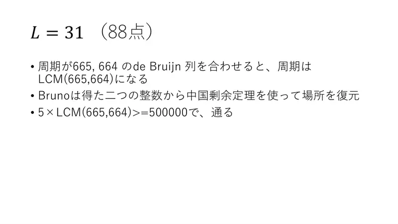
36Periodi 665 i 664 → zajednički period $\mathrm{lcm}$; Bruno iz dva indeksa KTO-om dobije položaj; $5\cdot\mathrm{lcm}(665,664)\ge500\,000$. -
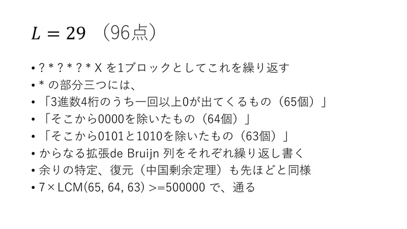
37$L=29$ (96): blok „? * ? * ? * X”; tri toka 4-nizova s nulom: 65, bez $0000$: 64, još bez $0101,1010$: 63. $7\cdot\mathrm{lcm}(65,64,63)\ge500\,000$. -
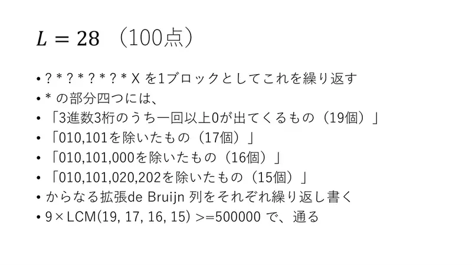
38$L=28$ (100): blok „? * ? * ? * ? * X”; četiri toka 3-nizova s nulom: 19; bez $010,101$: 17; još bez $000$: 16; bez $010,101,020,202$: 15. $9\cdot\mathrm{lcm}(19,17,16,15)\ge500\,000$.
-
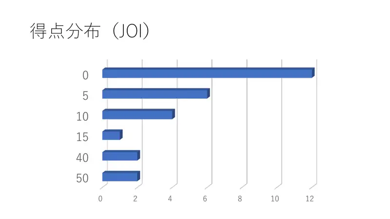
39Raspodjela bodova (JOI). -
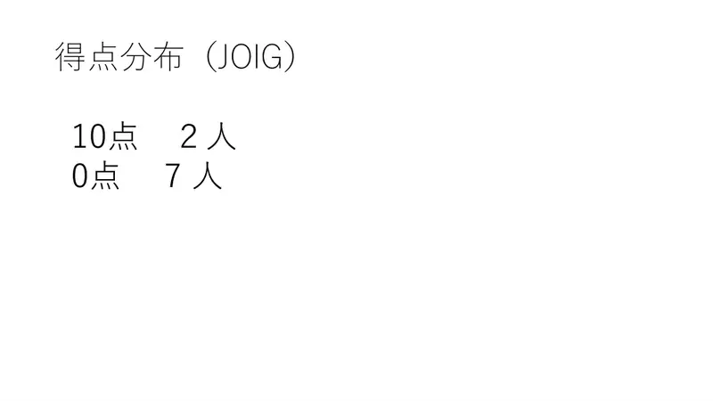
40Raspodjela (JOIG): 10 bodova 2, 0 bodova 7.
Sažetak
- Informacija je u razlikama: X besplatno, kontrolirana znamenka košta „?” ispred sebe.
- Veliki blokovi: broj bloka + marker; parnost razrješava kraj bloka ($L=32$).
- Mali blokovi: prošireni de Bruijnovi nizovi s relativno prostim periodima + KTO → $L=28$.